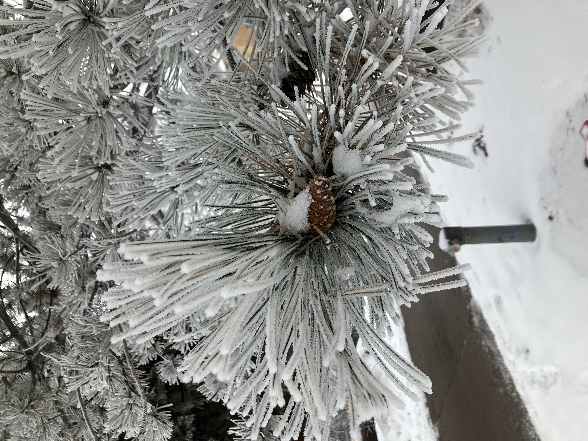
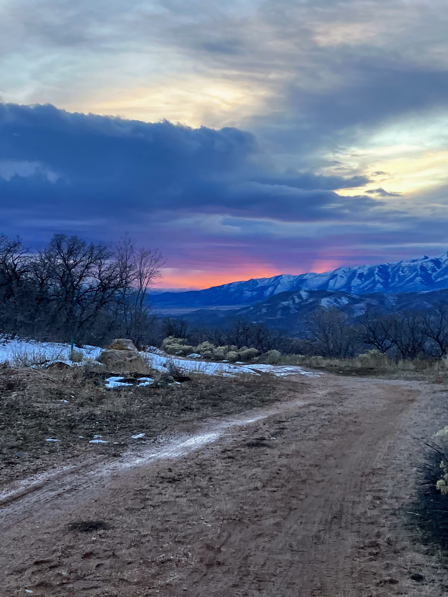

BYU Provo


BYU Idaho


How to take a landscape photo
Summary of Video
- Locations
- Nature areas rarely require filtering
- Tops of mountinas looking down at valleys
- Forests
- Rivers
-
Techniques
- Have a foreground, middle ground, and background
- Silhouettes are helpful for scale
- You can control composition, you can't control light
Return to top